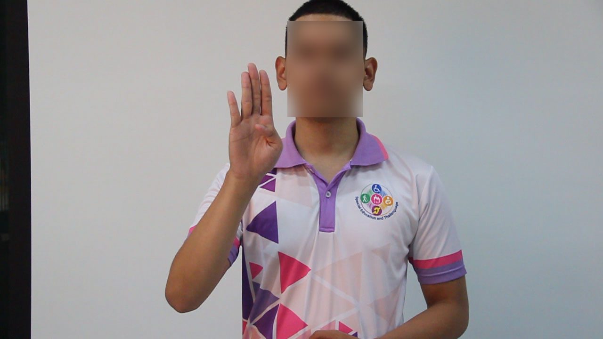
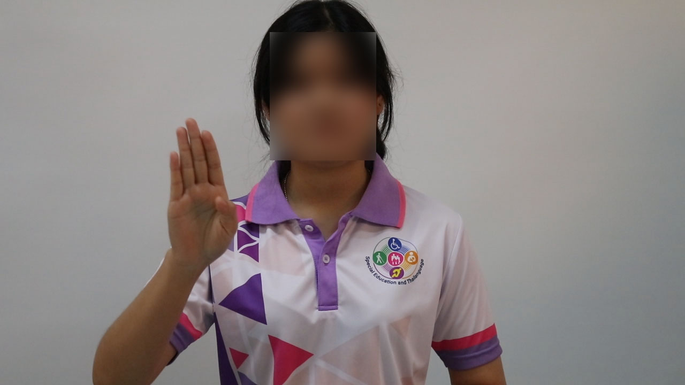
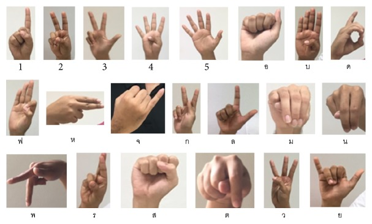

บ #1

บ #2

บ #3
เอกสารอ้างอิงสำหรับ Thai Sign Language web app — ดูว่าเทรนตัวอักษรไทยอะไรไปบ้าง รูปอยู่ไหน และมาจากแหล่งใด
| Thai | ASL map | Samples | Source | Status | Note |
|---|---|---|---|---|---|
| อ | A (closed fist, thumb side) |
250 | asl_unzip/train/A/ | ✓ verified | Chart-vs-chart compared (PMC vs NCO ASL) |
| บ | B (open palm, fingers together) |
298 |
bor/ (48 Thai, Mendeley) + asl_unzip/train/B/ (250) |
✓ verified | Has actual Thai source (Mendeley One-Stage-TFS, CC BY 4.0) |
| ล | L (thumb+index, L shape) |
250 | asl_unzip/train/L/ | ✓ verified | |
| ม | M (closed fist, thumb on knuckles) |
250 | asl_unzip/train/M/ | ⚠ expert says wrong | ASL M too close to ASL S → expert says Thai ม should be "claw" not closed fist. Replacement planned (see plan file) |
| น | N (closed fist, thumb on 2 fingers) |
250 | asl_unzip/train/N/ | ✓ verified | |
| ส | S (closed fist, thumb front) |
250 | asl_unzip/train/S/ | ✓ verified | |
| ว | W (3 fingers spread up) |
250 | asl_unzip/train/W/ | ✓ verified | |
| ย | Y (thumb + pinky out) |
250 | asl_unzip/train/Y/ | ✓ verified | |
| ร | R (index + middle crossed) |
250 | asl_unzip/train/R/ | ✓ verified by expert | Expert confirmed ASL R mapping (corrected an earlier theory) |
| จ | J (motion sign — pinky trajectory) |
250 | asl_unzip/train/J/ | 🧪 negative result | จ is 2-stroke / motion — static-frame model cannot handle properly. Kept as documented negative-result for paper (motivation for GRU sequence model) |
From Silanon (2017), PMC article 5611514, Figure 2. Used as the ground-truth visual for Thai↔ASL mapping decisions.

Standard ASL alphabet A-Z from NCO Inc, used for cross-language handshape comparison.
หนึ่งตัวอย่างต่อคลาส (เปิดโฟลเดอร์เพื่อดูเพิ่ม). ASL samples are gitignored — visible only on the local workspace that has run download_asl.py.




หาก thumbnails ไม่ขึ้น แปลว่า asl_unzip/ ยังไม่ถูก extract (ดู "How to reproduce" ด้านล่าง). The chart and bor/ images always work since they are git-tracked.
elegant-conjuring-umbrella.md.
start _tfs_dataset\bor # โฟลเดอร์ บ ของ Mendeley start _tfs_dataset\asl_unzip\asl_processed\train\M # ASL M (ตัวที่ expert บอกว่าผิด) start _tfs_dataset\asl_unzip\asl_processed\train\J # ASL J (motion — negative result) start _tfs_dataset\thai_fs_chart.jpg # Thai 16 one-stroke chart start _tfs_dataset\asl_chart.pdf # ASL A-Z chart
# 1. Re-download ASL-HG dataset (366 MB zip, gitignored) cd _tfs_dataset python download_asl.py unzip ASL_Processed_Images.zip -d asl_unzip # 2. Extract MediaPipe landmarks for the 8 base classes python extract_all.py # → extracted.json (อ บ ล ม น ส ว ย) # 3. Add ร and จ python extract_add_ror.py # → extracted_v2.json (+ร) python extract_add_jor.py # → extracted_v3.json (+จ) # 4. Train Dense MLP (production) cd train_node npm install node train_v3.js # → trained_model_v3/ # 5. Deploy — see _tfs_dataset/backups/ROLLBACK_GUIDE.md
cat _tfs_dataset/backups/model-2026-06-04-prod-dense-8class-valacc9959/labels.json cat _tfs_dataset/backups/model-2026-06-04-prod-dense-8class-valacc9959/metrics.json